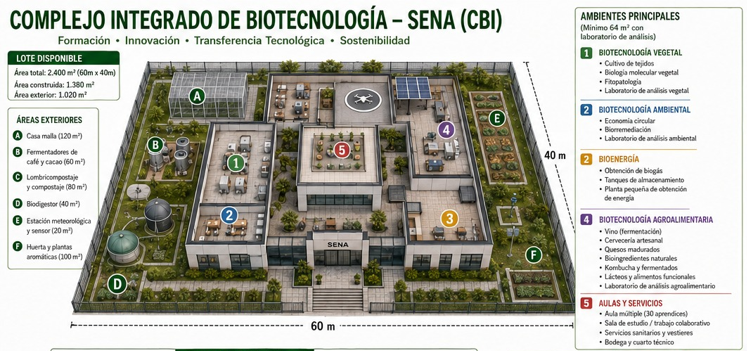
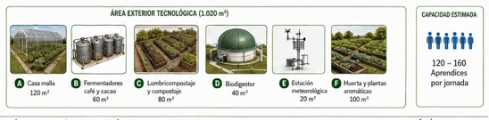
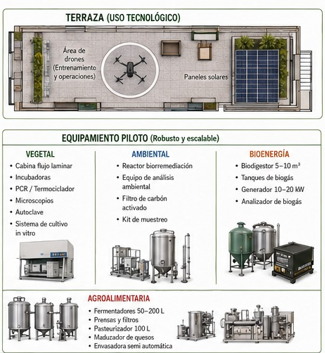

01
Prospectiva sectorial de la Biotecnología Agroindustrial en el Valle del Cauca (2017–2018).
Una visión de futuro que articula formación profesional integral, innovación, transferencia tecnológica y desarrollo productivo. El Centro de Biotecnología Industrial proyecta capacidades para responder a los desafíos de Palmira y el Valle del Cauca.
El ejercicio prospectivo integra la planeación tecnológica, la lectura del territorio y los estudios ocupacionales que orientan las oportunidades de desarrollo del Centro.
Prospectiva sectorial de la Biotecnología Agroindustrial en el Valle del Cauca (2017–2018).
Plan Tecnológico del Centro de Biotecnología Industrial (2020–2030).
Prospectiva territorial SENA Regional Valle (2020–2030).
Estudio ocupacional de la biotecnología en Colombia (2023–2024).
La visión 2030 formulada en la Fase II – Etapa 6 integra pertinencia, eficiencia, tecnología, transferencia y responsabilidad social y ambiental.
En el 2030 el Centro de Biotecnología Industrial será reconocido por su alta pertinencia y eficiencia en los procesos misionales, que responden a las necesidades de los sectores productivos de su zona de influencia, impactando los índices de competitividad e impulsando el desarrollo económico de la región, implementando tecnologías digitales para la automatización de procesos y facilitando la transferencia de tecnología a los diferentes sectores empresariales y productivos, brindando servicios a la medida de las necesidades de los grupos de valor y grupos de interés, fortaleciendo las habilidades socioemocionales, tecnológicas, pedagógicas y las competencias del talento humano del Centro, así como la infraestructura física y tecnológica disponible con responsabilidad social y ambiental.
La prospectiva organiza la apuesta institucional alrededor de ejes que conectan el mundo del trabajo, la tecnología, el territorio y la sostenibilidad.
Consolida la apuesta diferencial del Centro alrededor de bioprocesos, bioeconomía, servicios tecnológicos, transferencia de conocimiento e innovación aplicada al entorno productivo.
Aborda el derecho al acceso, la disponibilidad, la calidad, la inocuidad y el consumo responsable, articulando ciencia, tecnología y sostenibilidad en las cadenas alimentarias.
Orienta la formación y la gestión tecnológica hacia productividad, emprendimiento, empleo pertinente, cierre de brechas y fortalecimiento de capacidades regionales.
Actúa como línea transversal para automatización, analítica, inteligencia artificial, IoT, trazabilidad, integración de datos y transformación digital de procesos.
Más que líneas temáticas aisladas, los direccionadores operan como una red articulada para orientar formación, innovación, transferencia tecnológica y relación con el territorio.
Las transformaciones tecnológicas, productivas y regulatorias incrementarán el valor de nuevas competencias en logística, industria, biotecnología, servicios y sostenibilidad.
Integración de WMS/TMS, RFID, IoT, analítica, IA y automatización para reducir tiempos, errores e inventarios.
Sensores, análisis de condición, vibraciones, termografía, datos y gemelos digitales desplazan el mantenimiento puramente reactivo.
Crece el valor de IA aplicada, analítica, ciberseguridad OT/IoT e integración de datos para la toma de decisiones.
Aumenta la relevancia de cadena de frío, calidad, bioproductos, bioeconomía y conexión con mercados y exportación.
La descarbonización, la eficiencia, la logística verde y la economía circular se vuelven competencias de alto valor.
Se fortalecen capacidades para automotor y equipos de apoyo terrestre, con énfasis en actualización tecnológica.
La operación aduanera digital y el cumplimiento normativo ganan importancia en la gestión de cadenas globales.
El inglés técnico para contextos aeroportuarios, logísticos y tecnológicos se consolida como base estratégica.
Campo emergente que exige alianzas y abordaje gradual; no conviene improvisar donde aún no existe fortaleza instalada.
Las capacidades actuales del CBI permiten identificar fortalezas, campos diferenciales y áreas que requieren actualización, especialización o desarrollo mediante alianzas.
| Línea | Nivel actual | Competencias que ganan valor | Orientación estratégica |
|---|---|---|---|
| Gestión logística / producción | Fuerte | Logística 4.0, WMS/TMS, trazabilidad avanzada, operación aeroportuaria. | Actualizar y pilotear |
| Mantenimiento industrial / electrónico | Fuerte | Predictivo, IoT industrial, gestión de activos, digital twins. | Especializar |
| Software y automatización | Fuerte | IA aplicada, analítica, ciberseguridad OT/IoT, integración de datos. | Escalar e integrar programas |
| Biotecnología / agroindustria | Diferencial | Cadena de frío, calidad, bioproductos, bioeconomía logística. | Conectar con exportación |
| Gestión ambiental | Fuerte | Descarbonización, eficiencia, logística verde, economía circular. | Especializar |
| Automotor | Media-fuerte | Electromovilidad y equipos de apoyo terrestre. | Actualizar |
| Comercio exterior | Base/proyectada | Operación aduanera digital y cumplimiento normativo DIAN. | Reactivar/validar |
| Bilingüismo | Base estratégica | Inglés técnico aeroportuario/logístico. | Priorizar |
| Aeronáutica regulada | No es fortaleza actual | Mantenimiento de aeronaves y operaciones reguladas. | Aliar, no improvisar |
La consolidación de capacidades institucionales exige decisiones articuladas en oferta de formación, talento humano, infraestructura, metodología y relacionamiento territorial.
En el Centro de Biotecnología Industrial se plantea la construcción del "Complejo integrado de biotecnología" el cual incluye, además, BIOFARMACÉUTICA.



Consulte las memorias de la prospectiva del CBI, con los antecedentes, direccionadores estratégicos, tendencias de demanda y propuestas de transformación.
Descargar presentación